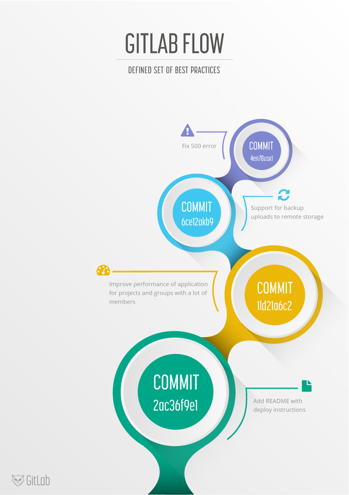

日常吐槽
前端工程化，个人认为就是通过工具减少程序员们的手动操作，从而提高生产力。还有一个就是，减小人在产品开发到上线整个流程的参与度，从而减小 bug 率。毕竟在琐碎繁复的操作中，人难免会出现失误。
gitlab 倒是一个很好的工具，可以管理代码，也可以实现持续集成、持续交付、持续部署等。本次的实践也只是通过 docker-compose 安装了 gitlab，顶多只是作为代码托管平台。CI/CD 除了 gitlab 可以完成，还有一些有名的 Jekins，Travis等。
本来打算用 gitlab 来完成这些功能，但是相关的知识储备还是有些欠缺。而且，就目前规划来看，继续深入 gitlab 并不划算。所以，这算是在此挖坑，等哪天时机成熟，再来补上这个技术债。
git工作流
在使用 gitlab 之前，不得不提 Git 工作流。Git 是版本控制系统，而 gitlab 是基于 Git 的代码托管服务。在团队协作时，为了更好的管理代码，就应该制定一个代码提交规范 —— Git 工作流程。
目前广泛使用的工作流程有：
- Git flow
- github flow
- gitlab flow



三种工作流各有特点,但也并非一成不变，要根据场景制定最佳工作流。
docker-compose安装Gitlab
安装 gitlab 的方法有很多，就仅仅是使用 gitlab 的 Docker 镜像安装，官方就提供了三种方法GitLab Docker images。不过，个人认为，最为方便的还是使用 docker-compose。
1 | web: |
hostname、external_url: 用来制定域名，不过需要在 host 文件中完成 ip 映射。
1
127.0.0.0 https://gitlab.example.com
ports: 暴露了容器的三个端口, 分别是 https 对应的 443, http 对应8 090 以及 ssh 对应的 22 (如果不需要配置https, 可以不暴露)
- volumes: 指定挂载目录, 这个便于我们在本地备份和修改容器的相关数据
然后执行 docker-compose up -d 命令就可以后台运行 gitlab 了。（-d 后台运行）
第一次登陆时需要设置管理员密码。
遇到的问题
gitlab Error executing action 'create' on resource ...
原因：没有相关权限。
解决方案： sudo docker-compose up -d。
gitlab 500 Internal Privoxy Error
原因：本机开了代理。